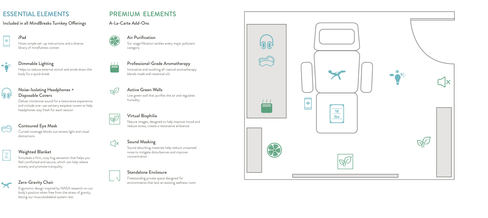
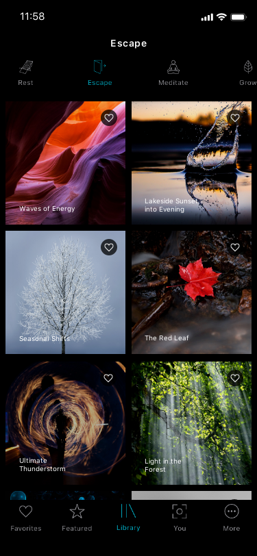
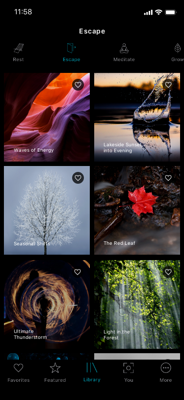

2020 - present
UX design
UX strategy
Wireframe
User interview
Market research
Social media campaign
Create Your Own Yoga Studio & Practice
UX Lead
Mindbreaks program transforms wellness rooms by utilizing evidencebased products and programming to deliver short, effective, and restorative breaks. This turnkey solution helps to alleviate stress and improve overall well-being through an engaging collection of mindfullness content：
Mindbreaks app is originally a tablet app, which is a part of the office wellness program. When new business came in, business development and marketing team reachout out to UX team and request to update the app. After conducting comprehansive market research and organizing a couple rounds of stakeholder workshop, my team decided to redesign the app and promote the app in mass market with a focusing on the residents of student housing.

Starting from customer's need, the first version of the prototype is designed based on comprehensive market analysis and a series of stakeholder workshops and brainstormings. Top 30 "wellness" app in Apple Store were analyzed. Users tasks were abstracted after the workshops.
 


For this younger audience like students, personalization is key. A major characteristic of the Generation Y demographic is the idea of extreme customization of products and services. Based on the competitive analysis, we saw the opportunity to provide personalized content and status tracking function to increase the user engagement.
A series of user interview shows that users are very interested in checking their status and history through the Mindbreak app and agree this kind of information is important for them. However, they had difficulty understanding the information and lack of motivation to check their status. Working with behavioral scientis, new parameters are identified to give users meaningful metrics.

Due to confidentiality, the more work about this project is available upon request via chenyanglulu@gmail.com. Thanks!